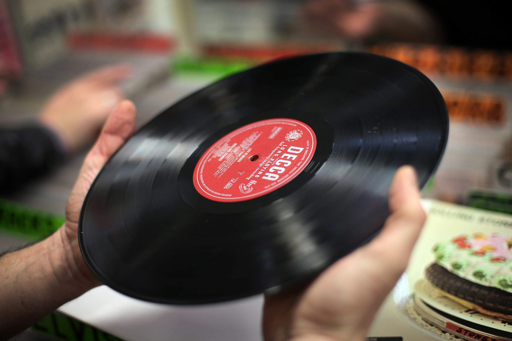
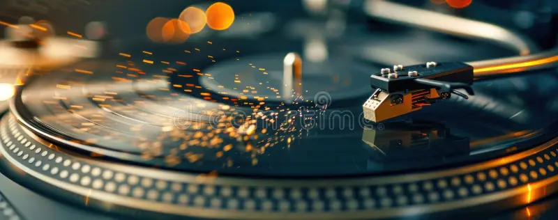

We believe vinyl records are more than just a way to listen to music — they are a ritual, a memory, and a connection to sound in its most honest form.
Our store was created for people who love music slowly:
flipping the record, placing the needle, and listening from start to finish.

From classic albums to modern pressings,
every record we offer is selected with care and respect for the artist, the listener, and the format itself.
The idea for this store began with a simple obsession: collecting records and discovering how different music feels on vinyl.
What started as a personal collection grew into a curated space for music lovers from all over the world.
Over time, we realized that vinyl is not about nostalgia alone. It is about presence. About listening intentionally.
About sound you can almost touch.
Today, our platform brings together collectors, beginners, DJs, and anyone curious enough to start their vinyl journey.

Vinyl slows you down. It asks for your attention.
In a world of endless skips and playlists, records invite you to listen deeply — to albums as they were meant to be heard.
The warmth, the imperfections, the physical presence — this is what makes vinyl timeless.